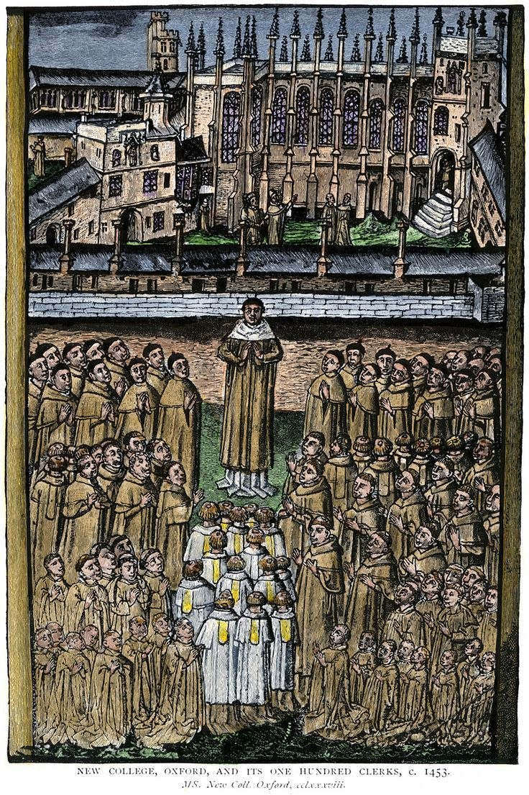

History of Oxford University
Oxford တက္ကသိုလ်ရဲ့ သမိုင်းကြောင်းဟာ ရာစုနှစ်ပေါင်းများစွာ ကြာမြင့်ခဲ့ပြီး စိတ်ဝင်စားစရာ အလှည့်အပြောင်းတွေနဲ့ ပြည့်နှက်နေပါတယ်။ အချက်အလက်တွေကို ပိုမိုစနစ်တကျရှိအောင် ကာလအပိုင်းအခြားအလိုက် အသေးစိတ် ခွဲခြားရှင်းပြပေးပါမယ်။
၁။ အစောပိုင်းကာလနှင့် စတင်တည်ထောင်ခြင်း (၁၀၉၆ - ၁၁၆၇)
Oxford မှာ ဘယ်နေ့မှာ စတင်စာသင်ခဲ့တယ်ဆိုတာ အတိအကျ မှတ်တမ်းမရှိပေမဲ့ ၁၀၉၆ ခုနှစ် ကတည်းက သင်ကြားမှုတွေ ရှိနေခဲ့ကြောင်း အထောက်အထားများအရ သိရပါတယ်။
* အရှိန်အဟုန်ရလာပုံ: ၁၁၆၇ ခုနှစ်မှာ အင်္ဂလန်ဘုရင် Henry II က အင်္ဂလိပ်ကျောင်းသားတွေကို ပြင်သစ်နိုင်ငံ ပါရီတက္ကသိုလ်မှာ ပညာသွားသင်ခွင့် ပိတ်ပင်လိုက်ပါတယ်။ အဲဒီအခါမှာ ပြည်ပရောက်နေတဲ့ ကျောင်းသားတွေဟာ Oxford မြို့ကို ပြန်လာစုမိကြရာကနေ တက္ကသိုလ်ဟာ တဟုန်ထိုး ဖွံ့ဖြိုးလာခဲ့ပါတယ်။
၂။ မြို့ခံများနှင့် ပဋိပက္ခ (၁၂၀၉)
ကျောင်းသားတွေနဲ့ Oxford မြို့ခံတွေကြားမှာ အငြင်းပွားမှုတွေ၊ ရန်ပွဲတွေ ခဏခဏ ဖြစ်ပွားခဲ့ပါတယ်။
* Cambridge ပေါ်ပေါက်လာပုံ: ၁၂၀၉ ခုနှစ်မှာ ဖြစ်ပွားခဲ့တဲ့ ကြီးမားတဲ့ ပဋိပက္ခတစ်ခုကြောင့် ကျောင်းသားနဲ့ ဆရာတချို့ဟာ အသက်ဘေးကလွတ်အောင် Oxford ကနေ ထွက်ပြေးခဲ့ကြပါတယ်။ သူတို့ဟာ Cambridge မြို့ကို ရောက်သွားပြီး အဲဒီမှာ ကျောင်းအသစ်တစ်ခု တည်ထောင်ခဲ့ကြတာဟာ ယနေ့ခေတ် Cambridge University ဖြစ်လာခဲ့တာပါ။
၃။ ကောလိပ်စနစ် စတင်ပေါ်ပေါက်ခြင်း (၁၃ ရာစု)
အစောပိုင်းမှာ ကျောင်းသားတွေဟာ မြို့ထဲက အိမ်တွေမှာ ငှားနေကြရတာပါ။ နောက်ပိုင်းမှာ စာသင်သားတွေ စုစုစည်းစည်းနဲ့ စည်းကမ်းတကျ နေထိုင်နိုင်ဖို့ Colleges (ကောလိပ်များ) ကို စတင်တည်ထောင်ခဲ့ပါတယ်။
* ရှေးအကျဆုံး ကောလိပ်များ: University College (၁၂၄၉)၊ Balliol (၁၂၆၃) နဲ့ Merton (၁၂၆၄) တို့ဟာ Oxford ရဲ့ သက်တမ်းအရင့်ဆုံး ကောလိပ်တွေအဖြစ် အပြိုင်အဆိုင် သတ်မှတ်ခံထားရပါတယ်။
၄။ Renaissance နှင့် ဘာသာရေး ပြုပြင်ပြောင်းလဲမှုကာလ
၁၄ ရာစုကနေ ၁၇ ရာစုအတွင်းမှာ Oxford ဟာ သိပ္ပံ၊ စာပေနဲ့ ဘာသာရေးနယ်ပယ်မှာ ဗဟိုချက်မ ဖြစ်လာပါတယ်။
* Bodleian Library: ၁၆၀၂ ခုနှစ်မှာ Sir Thomas Bodley က ကမ္ဘာကျော် Bodleian စာကြည့်တိုက်ကို ပြန်လည်မွမ်းမံ တည်ထောင်ခဲ့ပါတယ်။
* သိပ္ပံထွန်းကားခြင်း: ၁၇ ရာစုမှာ Robert Boyle (ဓာတုဗေဒပညာရှင်) နဲ့ Christopher Wren (ဗိသုကာပညာရှင်) တို့လို ပုဂ္ဂိုလ်ကျော်တွေ Oxford မှာ ရှိနေခဲ့ပြီး သိပ္ပံပညာရပ်တွေကို အားပေးခဲ့ပါတယ်။
၅။ ခေတ်သစ်ပြောင်းလဲမှုများနှင့် အမျိုးသမီးများ
၁၉ ရာစုနှောင်းပိုင်းအထိ Oxford ဟာ အမျိုးသားတွေသာ တက်ရောက်ခွင့်ရှိတဲ့ နေရာဖြစ်ခဲ့ပါတယ်။
* အမျိုးသမီးများ ဝင်ခွင့်: ၁၈၇၈ ခုနှစ်မှာ အမျိုးသမီးတွေအတွက် ပထမဆုံးသော ကောလိပ် (Lady Margaret Hall) ကို ဖွင့်လှစ်ခဲ့ပါတယ်။
* ဘွဲ့ပေးခြင်း: ၁၉၂၀ ခုနှစ်ကျမှသာ အမျိုးသမီးတွေကို တက္ကသိုလ်ရဲ့ အဖွဲ့ဝင်အဖြစ် အပြည့်အဝလက်ခံပြီး ဘွဲ့တွေ စတင်ပေးအပ်ခဲ့တာ ဖြစ်ပါတယ်။
Oxford သမိုင်းကြောင်းကို ပိုမိုသိရှိနိုင်မည့် အရင်းအမြစ်များ
Oxford ရဲ့ သမိုင်းကြောင်းကို အနှစ်ချုပ်တင်မကဘဲ အသေးစိတ် ထပ်မံလေ့လာလိုရင် အောက်ပါနေရာတွေမှာ ရှာဖွေနိုင်ပါတယ်-
* Oxford University Archives: www.archive.ox.ac.uk (တက္ကသိုလ်ရဲ့ ရှေးဟောင်းမှတ်တမ်းများ စုစည်းရာနေရာ)။
* Museum of Oxford: အွန်လိုင်းကနေဖြစ်စေ၊ ကိုယ်တိုင်ဖြစ်စေ မြို့နဲ့ကျောင်းရဲ့ သမိုင်းကြောင်း ပြခန်းတွေကို ကြည့်ရှုနိုင်ပါတယ်။
